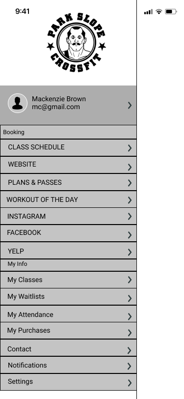
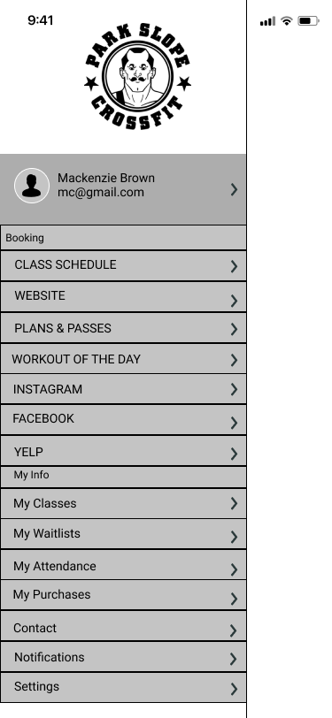
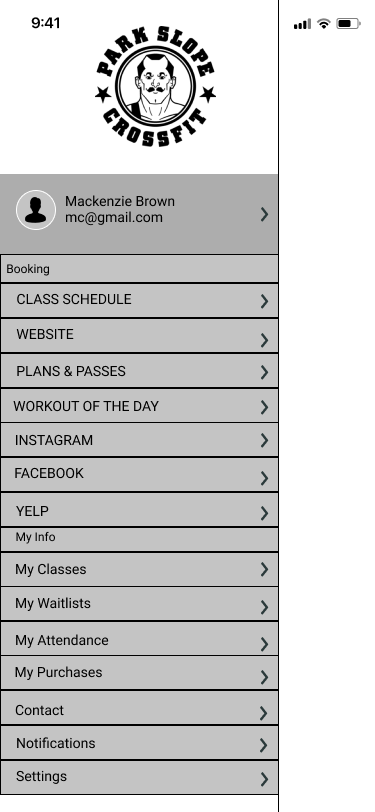

An iOS gym management software app servicing the clients and staff at Park Slope CrossFit.
Roles
User Research
UI Design
UX Design
Branding
Visuals
Wireframes
Mockups
Visual Design
Graphics
Icons
Tools
Pen and paper
Draw.io
Figma
InVision
The Problem
In the five since opening, the membership at Park Slope CrossFit
has increased significantly, with coaches/owners implementing mandatory registration for classes online at
parkslopecrossfit.com to stay within
the maximum capacity of 16 people per class. While this has proven to be helpful in
helping coaches manage overcrowding, parkslopecrossfit.com is not a mobile app,
users must use a laptop or tablet which
requires logging onto their account before registering. Once a user profile is accessed, members have access to the schedule, payment methods, passes, notifications, and upcoming classes. The coaches and owners have chosen not to utilize
registration apps such as Wodify, a widely used scheduling app for CrossFit gyms, due to high fees. User have complained of excessive scrolling,
too many tabs open at a time, and not knowing how to begin the log-in/onboarding process.
The Solution
The result is an iOS application that allows uers to log onto a personal dashboard, viewing the workout of the day (WOD)
, register for class, enroll
into a waiting list should the class be at capacity, and view membership balances.
This gym management app bridges the gap between the desktop PSCF site and the functionality of competing apps in the saturated market, allowing users an efficient UX
each time the app is opened.

Preliminary lo-fi prototypes
high-fidelity wireframes for iOS
Project Reflections
In February of 2019, Park Slope CrossFIt began tranisitioning from desktop enrollment to mobile scheduling and membership services.
One member, a backend developer,
partnered with the owners of PSCF to assist in this tranisition, consulting my newly developed MVP to gain insights as to how a mobile app would better serve the facility.
A month later, PSCF began to use to Pike 13 for scheduling and membership services, while partnering with SugarWOD, allowing members to record workout results and
"fistbump" workout results from existing members, a non-physical gesture soon embraced as the COVID-19 transmission began to climb in New York City, limiting physical contact within gyms.
I tackled a website (parkslopecrossfit.com) that provided users with a poor user experience-excessive browsing and scrolling, and navigation confusion.
I was able to design an MVP that was functional and user friendly, with an intuitive user interface that could potentially ease overcrowding and offer new features, such as enrolling into a waitlist.
10 months after the completion of this project, here's what I could have altered:
Think critically about accessibility and older users: while conducting user research for this project, I did not interview anyone in the 50+ age group, especially when considering PSCF's
oldest member is 88! Fitness is functional and accessible across all ages groups, as should a mobile app. If I were designing the PSCF app now,
I would conduct more research and run more A/B tests with the age group of 50 and older in order to ensure more exhaustive and diverse data analysis.
Ask more opinions on aesthetics! When designing my moodboard to create a brand identity, I sourced
images and color schemes I thought would best fit the UI based on my personal experience in a high intensity, fitness setting and based on CrossFit media.
Much of this was a bit biased and while the A/B testing reaped positive feedback regarding the visual design, inquiring within the users would have perhaps offered
a more diverse brand identity.

 
